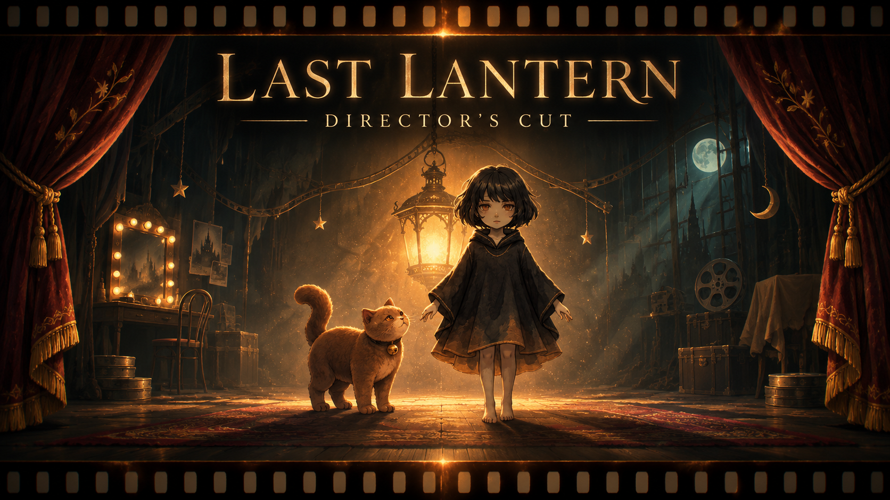
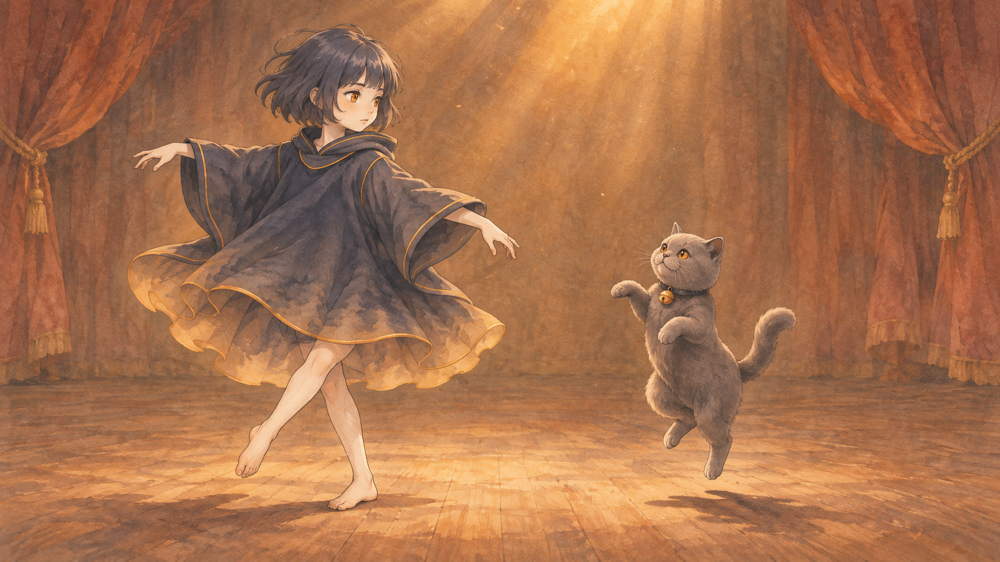

BACKSTAGE · 3D
The cat moves the set.
Push a crate or stage prop into the projector beam. In the real theatre, it is an ordinary object. On screen, it becomes a bridge.

A Glass Box development log
A little cat in the wings. A girl trapped in the film. One lantern connecting two worlds that were never meant to touch.
A film with a missing ending
When a film tears, a girl is stranded inside its painted world and her cat is left behind in the theatre. They can only make it forward together: the cat moves real objects beyond the screen; the girl turns their shadows into paths, switches, and answers.
The jam theme was Director’s Cut. We took it literally: what if changing the frame changed the world—and the characters could help each other rewrite it?



Not a companion. A co-director.
The puzzle lives in the gap between a solid object and the shape it casts onto celluloid.
BACKSTAGE · 3D
Push a crate or stage prop into the projector beam. In the real theatre, it is an ordinary object. On screen, it becomes a bridge.
THE PROJECTOR · BOTH
Light carries the object across the boundary. The player reads the same puzzle from two sides of the screen.
INSIDE THE FILM · 2D
Use the new shadow to reach a lever, release a rail clamp, or open a way for the cat. Then the 3D space changes too.
The design test: every major beat should make the player understand something new about the connection between screen and stage.
From a blank screen to a connected route
Four days, a playable slice, then the honest work: test what is there, find where the picture falls apart, and recut it.
THE FIRST PLAYABLE
The theme became a 2.5D puzzle platformer: a 3D cat in the theatre and a 2D girl inside the projected film. The first Unreal Engine 5.9 greybox focused on the hand-off between them before adding detail.
THE FIRST PLAYTEST
Early lighting washed out silhouettes, while a few room transitions blocked the cat. We pulled back the exposure, separated the foreground from the projection, and checked the floor and portal clearances across the route.
What changed: the documented validation pass reports 0 failed floor and portal clearance checks across the seven-zone route.
THE DIRECTOR’S CUT
The route connected a bridge, two cinemas, backstage, a service duct, a counterweight tower, and the rooftop beacon. The second cinema pushed the idea further: screen-side switches and film splice tape alter machinery in the theatre.
ATMOSPHERE & READABILITY
The lighting pass brought the spaces into one language: cool blue-grey rooms, warm accents around the windows and lantern, thinner fog, and enough fill to keep important shapes readable. The goal was mood that still served play.
Evidence from the playable route
Real screenshots from the jam build: the route, the projection puzzles, and the scale of the theatre around them.
Human-directed. AI-assisted. Tested in-engine.
This is the part we want to keep visible. AI made iteration faster, but every useful result still had to fit the game, survive in Unreal, and make the next player action clearer.
The human chose the theme interpretation, the two-world mechanic, the mood, and what a player should understand in each scene.
AI assistance supported concept exploration, code and script drafts, and production notes. Generated material was a starting point, not an automatic approval.
Unreal Engine 5.9 and Blender were used to assemble and shape the spaces. The result had to work with the existing camera, collision, and puzzle logic.
The build was checked in-engine. Overexposed lights and blocked passages were found in play, then corrected and checked again.
What this log is: a record of decisions, changes, and in-engine evidence. It does not claim that every generated concept or draft shipped in the game.
THE SCREEN IS STILL OPEN
Step into the theatre and see what the cat and the girl can change together.
Visit the game on itch.io Made for the 2026 Epic AI MegaJam